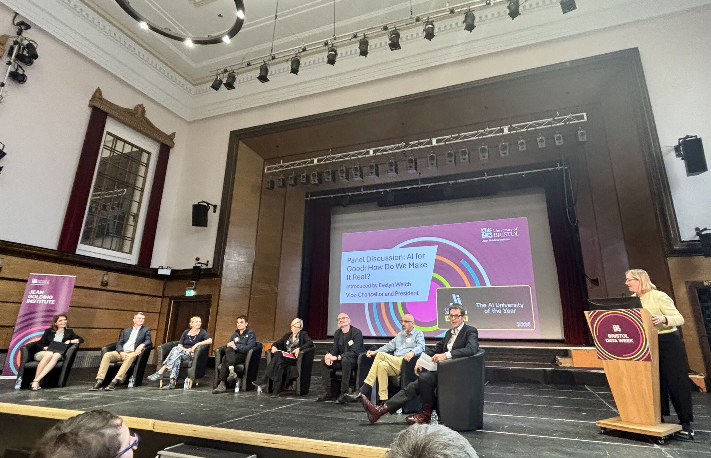

(2025-06-08) AI for Good!

Last week was the Jean Golding Institute data week and on Wednesday evening I mc'ed a panel discussion as part of a celebration of the AI University of the Year award. It was an ambitious evening, a two hour public event, with a superb key note by Sana Khareghani, words of introduction from the great and good and, my part, the panel discussion. I was nervous, worried the event would be more worthy than entertaining or that I'd spoil it through awkwardness. In fact, it was excellent, fun as well as interesting, lively and unpredictable. At the end of the panel discussion my brain was a whirl of thoughts and ideas and the audience seemed enthusiastic right to the end.
I am extremely grateful to the panel Sana Khareghani, Simon McIntosh-Smith, Genevieve Liveley, Sidharth Jaggi, Agnes Nairn, Colin Gavaghan, and Seth Bullock for a superb discussion, everyone was willing to try to say something heartfelt and interesting. Beyond that, I was impressed by our leaders Evelyn Walsh, Guy Poppy and Leon Danon who did introductions and managed in that narrow format to say interesting things and, as ever, well done to the Jean Golding Institute team who ran an amazing event.
For the record here is my introduction, which in the usual way I didn't deliver at all precisely and I never planned to give more than two lines of Caliban's speech, even that was an indulgence!
In the 19th century discoveries in chemistry and physics led to the invention of photography, indeed, some of the important advanced in both the technology and the practice of photography were made near here by Henry and Constance Fox Talbot. What a wonderful thing photography has proved to be; the things we can see in photographs, a bat frozen in flight, the Earth from space, memories.
However, in a 1859 essay Baudelaire wrote If photography is allowed to stand in for Art in some of its functions, it will soon supplant or corrupt it completely, thanks to the natural support it will find in the stupidity of the multitude and you can understand the fear of photography as a threat to painting and to memory itself: if a scene can be photographed, do we lose the skill of seeing?
Of course, photography was not an end to painting; in fact, it freed artists to explore the meaning of representation in dialogue with photography, they were freed to paint light, to paint emotions, to ask what it meant to paint from multiple perspectives; to paint dreams, to paint what seeing meant to us as humans.
This exploration is a testament to what is great about our humanity. Sadly, humans are also cruel. It was hoped that as the camera became the eye of history, history itself would become more humane. Alexander Gardner, who photographed the dead in the American Civil War wrote Here are the dreadful details! Let them aid in preventing such another calamity from falling upon the nation but we know that just this calamity has fallen again and again on nation after nation. In her essay Regarding the Pain of Others, Susan Sontag goes as far as suggesting that photography has desensitized us to horror rather than alerting us to it.
We are now met with an even more profound challenge of this sort. A series of discoveries in mathematics, electronic engineering and computer science have led to the invention of machines that can think.
Machine learning has astonishing potential for productivity, it will, in ways we cannot yet imagine, allow machines to replace humans across vast areas of our current activity. The same forces of change that robbed hand-loom weavers of their livelihoods are coming for medical doctors, university lecturers and CEOs. This could mean better health, better teaching, better businesses. It could be a liberation, freeing us from the drudgery of everyday thinking, the routine of thinking boring thoughts for pay, or these changes could destroy our lives. Will AI make us smarter and more productive, or leave us desensitized and stupid?
It is tempting to dismiss machine learning as some sort of statistical trick. That is a mistake, hopelessly naive; we have discovered something new and we need to ask, as artists did when photography was invented, what now? Now that machines can think, can we make them our companions in thought, not our rivals. What new thoughts are we free to think now machines can do some of our thinking for us? If thinking itself is not uniquely human, what is it that only humans can think?
In short; this is a confusing but wonderful time, we are always frightened when we are buffeted by change, when we are in the middle of a tempest, but the things we will create will be like magic:
Be not afeard; the isle is full of noises,
Sounds and sweet airs, that give delight, and hurt not.
Sometimes a thousand twangling instruments
Will hum about mine ears; and sometime voices,
That, if I then had waked after long sleep,
Will make me sleep again: and then, in dreaming,
The clouds methought would open, and show riches
Ready to drop upon me; that, when I waked,
I cried to dream again.